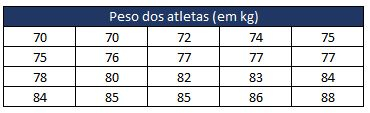
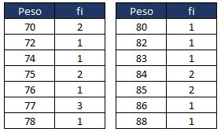
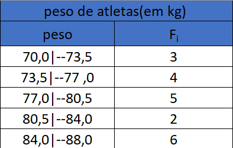

A estatística é uma ciência que utiliza vários métodos e técnicas para estudar os processos de coleta, apresentação e interpretação de conjuntos de dados. Isso colabora muito na hora da tomada de decisões, e por isso vemos em filmes alguns personagens falando "devemos analisar as estatísticas para tomarmos essa decisão" ou algo do tipo.
● Descritiva :
O seu objetivo fornecer um resumo com poucas palavras dos dados, Os dados podem ser resumidos de forma numérica ou gráfica
● Inferencial :
O seu objetivo é usar uma amostra aleatória dos dados coletados de uma população para descrever e fazer inferências sobre a população.
São importantes quando
O princípio é organizar a tabela, Para poder ver qual é o menor e qual é o maior número(ou no caso do exemplo, peso,)
Distribuição de Frequências :
Quando o conjunto de dados consiste de um grande número de dados, indica-se alocá-los numa tabela de distribuição de frequência.
Uma forma mais resumida de mostrar os dados do Rol é apresentar quantas vezes cada peso aparece na tabela do Rol. Dessa forma, construímos nossa tabela de distribuição de frequência.
Exemplo
frequências em classes :
é uma tabela que se constrói por classes, de um certo numero a outro, pra isso é preciso fazer calculos para construir, é necessário fazer a raiz do tanto de numeros da tabelo, exemplo a primeira tabela, Há 20 células/pesos, é feito a raíz desse numero e assim se descobre o numero de classes, após isso é feito a subtração do maior numero da tabela pelo menor, 70 - 88 = 18, após é dividido a amplitude total pelo numero de classes, 18 / 5 = 3,6, onde arrendondamos pra 3,5
resultado :
Estatisticas são faceis, na minha opinião, ainda há coisas que eu já devo ter esquecido ou qualquer coisa. então é isso, continue com Medidas de posição.